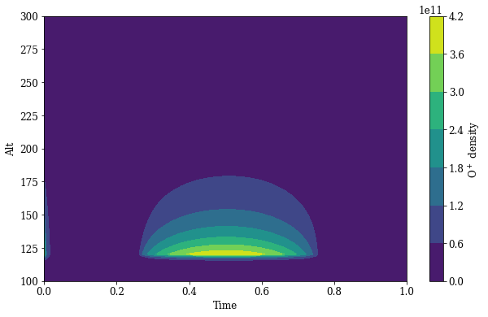

project · space weather summer school 2023
A time-dependent ionospheric chemical model that simulates the evolution of four key ion species across altitude and time, using neutral atmospheric densities, thermospheric temperature profiles, and solar EUV ionization rates.
overview
The ionosphere is the ionized upper layer of Earth's atmosphere, stretching from roughly 60 to 1000 km in altitude. It is shaped by solar radiation, which strips electrons from neutral atmospheric species and produces a complex mix of ions. Understanding how these ion concentrations evolve over time and altitude is fundamental to space weather research.
This project builds a simplified but physically grounded chemical scheme for the ionosphere. Given known neutral densities and a thermospheric temperature profile, the model integrates a system of coupled differential equations forward in time to track how four ion species rise, peak, and decay across the altitude range of 100 to 300 km.
modelled ion species
physics and methodology
The core of the model is a system of coupled ordinary differential equations, one per ion species, representing the balance between production and loss at each altitude level. Production is driven by solar EUV photoionization, which was provided externally by a radiative transfer team as spectral ionization rates from the EUVAC solar flux model. Loss is governed by ion-neutral reaction rates that depend on the local temperature and neutral densities.
The temperature profile was initialized as a hyperbolic tangent function that rises from 200 K at 100 km to approximately 700 K at 300 km, matching observed thermospheric gradients. Neutral species (O, O2, N2) were initialized with boundary conditions derived from standard atmospheric models and propagated vertically via the hydrostatic equation.
The stoichiometry of the reaction network was encoded as a 9-species by 13-reaction matrix, capturing all relevant production and loss pathways. The team attempted to solve the full system using scipy.integrate.solve_ivp with the LSODA adaptive integrator (which switches between stiff and non-stiff methods). Dimensional issues encountered during integration led to the team solving each species sequentially in a steady-state first approach before attempting the fully coupled time-dependent solution.
approach
solve_ivp with the LSODA method for stiff equations.results
The model successfully reproduced physically consistent density profiles for all four ion species. O+ peaks around 125 km with a characteristic dome shape in time, reflecting the slow ionization buildup and gradual recombination. N2+ concentrations are highest near 100 km and drop sharply with altitude, consistent with the rapid charge-transfer reactions that consume it. The combined density plot shows clearly how the four species occupy different altitude regimes and evolve on different timescales.
